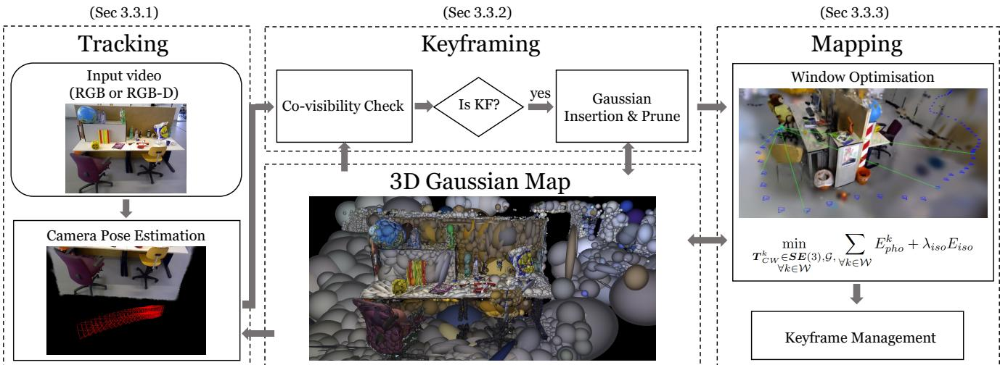
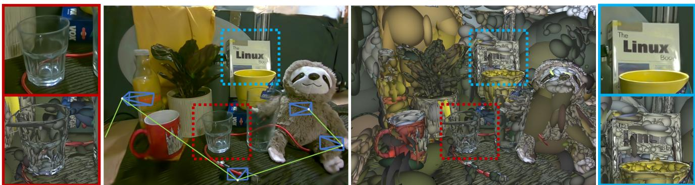
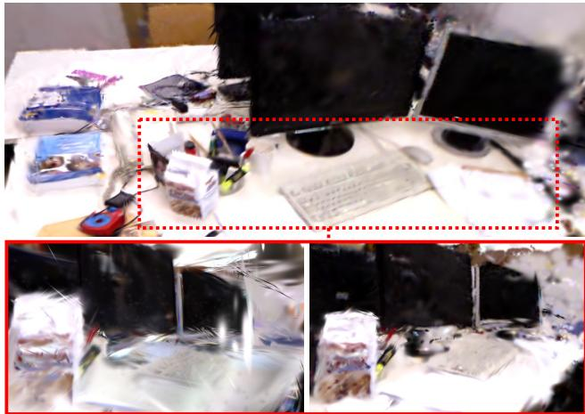
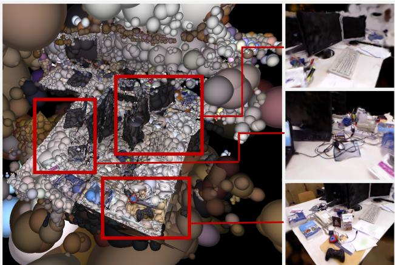

本节目标
读完你应该能：说清「用高斯作唯一表示」比用点云、体素、MLP 强在哪；解释为什么渲染误差可以直接拿来优化相机位姿；知道单目 3 fps 这个数字背后还有什么代价；以及理解「高斯没有面」会带来什么麻烦。
和前面课程怎么接
地基是上一课 0116（3DGS 原著：椭球参数化、瓦片光栅化、自适应密度控制）。位姿估计这件事则要对比第三季 0057 VINS-Mono 与第四季 0084 FAST-LIO2——那些是几何/滤波范式，这里是「渲染误差反传」。最后 0041 课会以意想不到的方式重新出现。
1. 一个必须先说清楚的名字问题
这节课要读的论文，本地文件叫 2024_MonoGS.md，这一课的标题里也写着 MonoGS。但我们必须先把一件事说明白，否则你以后去检索原文会找不到：
★ 判定依据（请务必记住）
这篇论文的正文标题是 Gaussian Splatting SLAM——标题里没有 MonoGS 这个词。
依据有三条：① 本地 md 文件第 1 行就是 # Gaussian Splatting SLAM，紧接着是四位作者与单位，没有任何副标题；② 全文正文里，MonoGS 这个词一次都没有出现过（唯一出现它的地方是插图路径 images/2024_MonoGS/…，那是资料库给文件起的名字）；③ 摘要里的自我介绍是「Our method, which runs live at 3fps…」，用的词是 method，不是 MonoGS。
所以：MonoGS 只是社区里约定俗成的系统名（因为这篇论文同时给了单目与 RGB-D 两种配置，单目那一版被大家叫成了 Mono Monocular-Gaussian-SLAM，简写 MonoGS）。本课程沿用它，只是为了标题好认；检索原文时请用 Gaussian Splatting SLAM。
顺带交代一下这篇论文的来历。作者是帝国理工 Dyson 机器人实验室的 Hidenobu Matsuki 与 Andrew J. Davison，加上软件性能优化组的 Riku Murai 和 Paul H. J. Kelly，2024 年发表在 CVPR。论文一开头就把自己的位置讲得很清楚：
「我们给出3D 高斯泼溅在单目 SLAM 上的第一次应用……我们的方法以 3 fps 实时运行，把高斯作为唯一的三维表示，统一了准确而高效的跟踪、建图与高质量渲染所需要的表示。」
注意这句话里有两个词分量很重：「单目」（最难的设定）与「唯一」。「唯一」是这一课的核心，下一节专门讲它。
2. 「唯一表示」到底是什么意思
先把「表示」（representation）这个词用大白话讲一遍：机器把三维世界记在内存里的那种形式。地图可以是一张点云表、一张体素格、一段网格、一堆网络权重——选哪一种，就决定了你后面所有的算法长什么样。
论文在引言里点名了几种旧答案，并且逐一说了它们的短处。请看这张表：
| 旧的表示 | 原文点出的毛病 |
|---|---|
| 体素格 / SDF 格 | 吃内存、分辨率有上限；即使上八叉树或哈希，也没法为了大范围修正而灵活地扭曲 |
| 网格（mesh） | 拓扑不规则，融合新信息很难做 |
| 点云 / 面元（surfel） | 不连续，融合与优化都棘手 |
| 神经场（NeRF 那一类） | 渲染要逐像素沿光线步进，代价高 |
然后是它的主张：3D 高斯一条都不占。论文原话说，高斯「作为 SLAM 表示，最像点和面元，因此继承了它们的效率、局部性和容易被扭曲修改的能力」；同时它又是「以平滑、连续可微的方式表达几何——密集的高斯云互相融合，共同定义一个连续的体积函数」。再加上现代显卡天生就擅长把海量高斯泼溅到屏幕上，所以它同时拿到了三样东西。
那「唯一」两个字具体指什么？指的是系统的每一个环节都吃同一份数据，不需要第二套表示。请看论文的系统总览图：

（中译：SLAM 系统总览。我们的 SLAM 系统把 3D 高斯作为唯一表示，统一了 SLAM 的所有组成部件，包括跟踪、建图、关键帧管理与新视角合成。）
怎么看这张图：① 先看图上是不是只有一种数据形状在流转——没有「特征点地图」和「稠密地图」两套东西并排；② 再看箭头：同一份高斯，一头喂给跟踪（算位姿），一头喂给建图（改形状），还能直接渲染出图给新视角合成本用；③ 这就是「唯一」的意思——跟踪用的、建图改的、渲染出的，是同一样东西。
为什么要强调「唯一」？因为很多同期系统走的是分层（layered）路线：前端用传统特征点算位姿，后端用神经场或体素建图，两套表示之间靠位姿硬接起来。论文对这种做法的评论很含蓄，但意思很明确：真正有意思的进展，是「一个统一的新稠密表示能用在系统运转的所有方面」。这不是工程上的洁癖，而是因为一旦表示统一了，渲染出来的误差就能反过来同时修正位姿和地图。下一节讲的就是这件事。
3. 位姿是怎么被推出来的
这是本节课最重要的一节。先回忆一下我们熟悉的位姿估计是怎么做的：
从图像里提出特征点（或直接用像素灰度），和地图里的点/线/面做匹配，算出重投影误差，再最小化它。误差里显式含有「相机位姿」这个未知数。
拿当前估计的位姿，把地图渲染成一张图，和真实拍到的照片直接相减。这个差就是误差——没有提取任何特征，也没有做数据关联。
论文把跟踪时的损失写得非常朴素，就是一张渲染图减去一张实拍图的 L1 距离：
符号逐个解释：$\mathcal{G}$ 是当前地图（所有高斯）；$T_{CW}$ 是相机位姿（从世界坐标到相机坐标的变换）；$I(\mathcal{G},T_{CW})$ 是从当前位姿把地图渲染出来的那张图；$\bar{I}$ 是传感器真实拍到的图。两者相减、取绝对值、求和——就是「我这幅画和你那张照片差了多少」。
关键在下一步：这个误差是可以对位姿求导的。因为整个渲染过程（投影、排序、α 混合）都是可微的，所以梯度能一路回传到 $T_{CW}$ 上，用梯度下降把位姿往下调一点、再调一点。
不过论文在这里做了一件硬功夫，值得单独说：它自己手推了「高斯地图对 SE(3) 位姿」的解析雅可比（analytic Jacobian）。原文原话是：
「据我们所知，我们给出了 EWA splatting 与 3DGS 中第一个关于 3D 高斯的 SE(3) 相机位姿的解析雅可比。」
为什么要手推而不是让 PyTorch 自动微分去算？论文给了两个理由：① 光栅化是性能关键路径，3DGS 原本就是用 CUDA 手写导数的；② 用李代数推最小雅可比，可以让雅可比的维度和自由度严格对上（位姿 6 个自由度），「消除任何多余的计算」。论文的硬结论是——这个解析梯度带来了很大的收敛盆地，位姿从一个相当偏的初值也能被拉回来。这一点后面还会看到一张实验图。
现在把整件事画出来看。下面这张自绘图要讲的是：同一个误差，同时推动两样东西。
怎么看这张图：① 上面两个小框，左边是「用当前参数渲染出来的画面」，右边是「真实拍到的照片」，它们之间那根红色虚线就是像素差（误差）；② 注意从这根红线往下伸出的两根箭头是反着的——误差不是被拿去显示，而是被反传回去；③ 左箭头落在相机上，标着「相机挪一点」，右箭头落在桌上那几团绿色椭球上，标着「高斯也改一点」；④ 最关键的一步是：这两件事不是在两个模块里分别做的，而是同一个梯度、同一次反向传播里一起做的——这正是「高斯是唯一表示」换来的好处。
要记住的一句话：高斯在这里不只是「地图」，它还是一个可微分的传感器模型：你问它「从这个位姿看过去会看到什么」，它答一张图，答错了就告诉你该往哪边改。
文中还提到一个很实在的工程事实：每一帧通常需要至少 50 次梯度下降迭代。原文用这句话反过来论证表示的选择：既然一帧要跑 50 次「渲染 + 求梯度」，那么「一个渲染快、求梯度快的表示」就成了系统设计的决定因素——这也就是它选高斯而不选 NeRF 的直接理由。
建图那一侧的目标函数是类似的，只是把位姿和高斯参数一起放进了未知数：
其中 $\mathcal{W}$ 是当前关键帧窗口里的帧（外加每次迭代随机抽的两个过去关键帧——原文说这是为了防止「忘记全局地图」）。有深度输入时（RGB-D 模式），再加一项几何残差 $E_{geo}=\|D(\mathcal{G},T_{CW})-\bar{D}\|_1$，位姿估计会更稳。
互动判断
在跟踪阶段（tracking），论文原话是「只优化当前相机位姿，不更新地图表示」。那为什么它还要把地图渲染一遍？
4. 单目 · 3 fps：它靠什么撑住
论文摘要里最抓眼球的一句话是：「runs live at 3fps」——单目相机、实时（按论文的说法是 near real-time），每秒处理约 3 帧。图 1 就是它的现场展示：

（中译：用一台单目相机，我们以 3 fps 实时重建高保真三维场景。每来一帧 RGB，3D 高斯就被增量地生成，并与相机位姿一起被优化。左图是光栅化后的高斯，右图是把高斯按几何着色。注意它捕捉到的细节与复杂材质（例如透明）。像电线这样的细结构由大量细长的小高斯准确表示；透明物体则通过把高斯摆在其轮廓边缘来有效表示。）
怎么看这张图：① 比较左右两半：左边是渲染效果，右边是把同样的高斯按几何着色——右边能看出城市的形状是由一团团椭球堆出来的；② 找图注点名的两处细节：细长的电线和透明物体。前者靠「很多个细长小高斯」，后者靠「把高斯贴在轮廓边缘」；③ 想想这意味着什么——它没有去显式地建模表面，所以反而绕开了「透明物体算不出深度」这个传统难题。原文在定性结果那节明确说了这一点。
怎么和 3 fps 对上：3 fps 是「端到端跑完一帧（跟踪 + 建图 + 渲染）」的速度，不是纯渲染速度。论文在 RGB-D 设定下另报了渲染帧率 769 fps（Replica 数据集），那是「地图已经建好、只渲染」的速度——两个数字不要混。
那么，单目凭什么能跑起来？单目的困难在于没有尺度：一张照片里，远近是分不清的。论文靠三件事把这件事撑住。
3DGS 原著用球谐系数（SH）表示「同一个点从不同角度看颜色会变」。这一篇原话是「为简单和速度，我们省略表示视角相关辐射的球谐」——因为单目序列里，多视角的外观监督本来就不足，留着它收益小、开销大。
新高斯怎么放？有深度传感器时直接反投影深度；单目时用自己渲染出的深度图——有深度估计的像素，就在那个深度附近放高斯；没估计的像素，就放在渲染图的中位深度附近，并给一个很大的方差。
不可能把所有历史帧一起优化。它维护一个很小的关键帧窗口，选帧标准是共同可见性：新帧和上一个关键帧看到的高斯重合度掉到阈值以下、或者平移相对中位深度太大，就登记为新关键帧。窗口管理沿用了 DSO（第三季 0049 课）的启发式。
这里有一处非常漂亮的工程细节值得单独拎出来：共同可见性是怎么算的？高斯在渲染时本来就会沿光线排序，遮挡天然被处理掉了。所以论文规定：只要某个高斯在光栅化里被用到、并且该像素累积的 α 还没到 0.5，就算它从这个视角可见。换句话说——渲染器顺手就给出了一份带遮挡关系的可见性表，不需要额外的启发式去猜。原文专门夸了这一点。
另外，单目下会有大量位置放错的新高斯。论文的处理是：绝大多数会在优化中因为不满足多视角一致性而自己消失；剩下那些顽固的，就查可见性——如果某个高斯是在最近 3 个关键帧里插入的，却至少被其他 3 帧看见过而没被观测到，就判定它几何不稳定，直接剪掉。
5. 高斯没有「面」的麻烦
现在讲这一课最值得琢磨的一个技术点，也是高斯表示真正的软肋。
回忆上一课：3DGS 用一堆各向异性的椭球来表示场景。椭球是体积元，它没有「表面」这个属性——不像网格有面片、也不像 TSDF 有零等值面。这会带来两个后果，论文都写明了。
后果一：沿视线方向的高斯没人管
论文原话：「3DGS 的光栅化对沿视线方向的高斯不施加任何约束，即使有深度观测也一样。」在离线的场景重建里，因为视角足够多、挑得足够好，这不是问题；但在连续运行的 SLAM 里，「这会造成很多伪影，让跟踪变得困难」。
论文的对策是一个叫各向同性正则（isotropic regularisation）的项：
$\mathbf{s}_i$ 是第 $i$ 个高斯三个轴的长度（尺度参数），$\tilde{\mathbf{s}}_i$ 是它的均值。这个式子做的就是：惩罚三个轴长短不一致——鼓励椭球长得像球。论文说得很直白：这「鼓励球形化，避免高斯沿视线方向被极度拉长而产生伪影」。
下面的原图就是这项正则的消融可视化——它把「有正则」与「无正则」摆在一起，非常有说服力：

（中译：各向同性正则的效果。上排：靠近训练视角的渲染（看着键盘）。下排：从远离训练视角的地方渲染 3D 高斯（从键盘侧面看），左为不用各向同性损失，右为使用。
怎么看这张图：① 先看上排——那是「从训练时用过的视角看」，有没有正则几乎看不出差别，说明这项正则不以牺牲正常视角的画质为代价；② 再看下排——那是「从一个没有训练过的侧面看」，左边（无正则）出现了明显的涂抹与拉长，右边（有正则）干净得多；③ 结论：正则约束的是你没看到过的那部分几何，它把「为了凑合当前视角而把高斯拉成一根长条」这条捷径堵住了。
一个诚实的说明：本地 md 文件里这张图的说明文字在排版上被「w/o / w/」两个小标签挤到了图片的下一行，图注定位工具因此报了「附近无图注行」。上面这段图注是从紧随其后的正文里逐字还原的，不是我们编的。
第二个后果，就是我们这一课标题里说的「浮空团」——它其实是纯单目的必然产物：既然一个像素的深度是猜的，就一定会有一些高斯被放到了「其实什么都没有」的半空中。它们会让渲染出鬼影，也会把位姿估计带偏。原文对这类东西用的是剪枝（上一节讲的三帧规则），而 3DGS 原著用的是「每 3000 次迭代把不透明度压回接近 0、让它们重新竞争」——那是上一课 0116 的重点。
怎么看这张图：① 左格里，大部分绿色椭球都贴着墙和桌面（它们是合理的重建），但有三团红色椭球飘在半空中，被红虚线框圈出来了——它们不是任何真实物体的几何，只是「这个像素的深度猜错了」留下的东西；② 右格是加上各向同性正则、并配合剪枝之后：飘出去的椭球被拉回表面附近（图中画得扁一些，表示它们不再沿视线方向疯长），多余的被清掉；③ 注意右格上方仍有三团更淡的椭球——它们是新插入、还没收敛的，说明这套机制是边跑边清，不是一次性的。
要记住的一句话：网格或 TSDF 的「表面」是内建的，高斯没有这个内建约束，所以必须额外加一条正则、额外加一套剪枝规则——这是所有高斯 SLAM 都要还的一笔债。
互动判断
各向同性正则 $E_{iso}$ 是「让椭球三个轴长尽量相等」。如果把它用到极致、让每个高斯都变成正球，会出什么问题？
6. 一个跨越 17 年的呼应
现在说这节课我最想让你记住的一件事——它不是技术，是人。
这篇论文的作者名单里，最后一位是 Andrew J. Davison，单位是帝国理工 Dyson 机器人实验室。而你还记得第三季的第一课吗？那是 0041 课，讲的是 MonoSLAM——2007 年那篇把「单目相机实时 SLAM」第一次做出来的论文。它的第一作者，正是 Davison。
地图是一串稀疏的特征点（路标），塞进一个巨大的状态向量里；位姿和路标一起用扩展卡尔曼滤波递推。那时候「地图」= 几百个三维点。
地图是几十万到上百万个各向异性高斯，每个有自己的位置、形状、颜色、不透明度；位姿不再是滤波里的一个状态，而是跟着渲染误差一起被梯度下降推着走。
十七年，同一个实验室，同一个作者。「单目实时 SLAM」这个问题没变，变的是「地图」这两个字的含义：从「状态向量里塞进去的一串路标」，变成了「一堆可以被渲染、被求导、被裁剪、被扭曲的椭球」。而位姿估计的方式也从「滤波」换成了「渲染误差反传」——我们在第三节讲的那个机制。
你可以把这条线和我们四季以来的主线对上：第二季 0018 / 0019 讲 BA 与滤波的分野，第三季 0049 DSO 把「直接法」推到极致（用像素灰度差直接优化位姿，同样不提特征），第四季 0084 FAST-LIO2 用「直接配准 + ikd-Tree」把激光侧的效率拉满。这一篇做的事情，本质上是把直接法那条线推到它的极端：连「像素灰度差」都不用了，直接比「渲染图与照片的差」——而渲染图的来源，就是地图本身。
7. 结果与边界
论文在 TUM RGB-D（3 个序列）与 Replica（8 个序列）上做了定量评测。几个值得记住的数字：
| 项目 | 数字 | 说明 |
|---|---|---|
| 实时速度 | 约 3 fps | 端到端（跟踪 + 建图 + 渲染），单目 |
| 渲染速度（RGB-D，Replica） | 769 fps | 地图已建好时纯渲染；对比 NICE-SLAM 0.54 fps、Vox-Fusion 2.17 fps、Point-SLAM 1.33 fps |
| 渲染质量（RGB-D，Replica） | PSNR 38.94 / SSIM 0.968 / LPIPS 0.070 | Point-SLAM 为 35.17 / 0.975 / 0.124（注意 Point-SLAM 用了真值深度引导采样） |
| 地图内存 | 单目 2.6 MB；RGB-D 3.97 MB | 同表里 iMAP 0.8 MB、NICE-SLAM 40.3 MB、Co-SLAM 6.4 MB |
内存这一行特别值得看：单目只要 2.6 MB。对比一下同表的 NICE-SLAM 要 40.3 MB（它存的是多层特征网格）——这正是「显式椭球比隐式特征网格省内存」的一个直接证据。但论文也诚实地说，iMAP 那种纯 MLP 反而只要 0.8 MB，只是「受限于小 MLP 的容量，表达高保真场景很吃力」。
下面这张是真实数据上的结果：

（中译：fr1/desk 序列上的单目 SLAM 结果。左边是重建出的 3D 高斯地图，右边是新视角合成结果。）
怎么看这张图：① fr1/desk 是 TUM RGB-D 里最经典的办公桌序列（第三季 0057 VINS-Mono 那节课也用过它），现在被纯单目跑出了这样一张高斯地图；② 左边请盯着高斯的摆放位置看——论文的原话是它们「几何上合理且三维一致」，也就是说没有大面积的浮空团；③ 右边这张「新视角合成」是 SLAM 系统顺手产出的副产品：传统 SLAM 只能给你一条轨迹和一张点云，这里你能从任意角度重新看一遍这个房间。
要记住的一句话：在同一个系统里，建图、定位、照片级渲染是同一件事的三种输出——这是「高斯作唯一表示」最直观的好处。
原文承认的边界（逐条）
结论一节把「为大尺度场景集成回环检测」列为未来方向。所以跑得越远，漂移越大——这一点和第四季 0074 LOAM 当年留下的问题一模一样。
「near real-time」在摘要里是明确加了限定词的。3 fps 对一台匀速走的机器人而言，帧间位移已经不小了。
论文明确说它不使用任何预训练的单目深度预测器、也不依赖其他跟踪模块，只用 RGB。这是为了证明 3DGS 本身的能力——代价就是尺度要靠自己慢慢收敛，早期容易飘。
原文在结论里写了：高斯「并不显式表示表面」，所以像表面法向这样的几何量是拿不到的。这个问题会在后面的 0122 课（SuGaR / GS-IR）被正面处理。
还值得补一句：论文用来对比的基线，主要是「同样没有回环」的方法（DSO、DepthCov、DROID-SLAM 的 VO 配置），以及 NICE-SLAM / Vox-Fusion / Point-SLAM 这些同样基于渲染的隐式方法。原文特别提到：它的单目结果已经可以与那些做了显式回环的系统相比——这句话其实是在暗示，这条路还有余量。
关于 OCR 的说明
本地 md 文件由 OCR 生成，这一篇有两处需要提醒：① 通篇存在把连字（fi / ti / ff）吃掉的情况，例如 transparent 偶发被拆成带 <sub> 的形式；② 图 3 的说明文字在排版上被「w/o」「w/」两个小标签挤到了图片下一行，自动定位图注的工具因此报了「附近无图注行」——本课图 3 的图注是回原文逐字核对后补上的。此外，标题本身没有 OCR 错误，它确实就是 Gaussian Splatting SLAM。
课后练习
- 请用自己的话解释：为什么这篇论文要让地图「渲染一张图出来」再和照片比，而不是像 ORB-SLAM 那样提取特征点做重投影误差？
展开查看答案
两者都要最小化一个误差，但误差的定义方式不同。
① 特征法（第三季 0043 那一族）的误差是「地图里的三维点投影到图像上，应该落在哪个像素」——它要求先建立「这个像素对应地图里哪个点」这种数据关联，关联错了误差就失去意义。而且它只看得到有特征的地方，纹理弱的墙面基本不贡献约束。
② 渲染法（这一篇）的误差是「整张渲染图减去整张照片」——每一个像素都在贡献约束，包括墙面、地面这些没有特征的地方；也不需要任何数据关联，因为「渲染」这个动作本身就隐含了「谁挡着谁」。
③ 之所以能做到这一点，前提是渲染过程可微：投影、排序、α 混合全都能求导，所以误差能一路回传到相机位姿上。论文为此专门手推了 SE(3) 位姿的解析雅可比，并说这是 3DGS 与 EWA splatting 上的第一次。
④ 代价也要说清：一帧至少要 50 次梯度迭代，每次都要完整渲染一遍，所以它只有 3 fps；而特征法在有特征的地方往往快得多。
- 「高斯是唯一表示」这句话，如果换成「点云 + 神经场双层表示」，会失去什么？
展开查看答案
会失去「一个误差同时修正位姿和地图」这条通路。
① 如果是双层表示，比如前端用特征点算位姿、后端用神经场建图，那渲染误差只能用来改后端的地图，改不动前端——位姿是前端算完再传过去的，误差传不回去。这样系统的上限就被前端锁死了。
② 高斯作为唯一表示时，位姿和地图参数在同一个可微计算图里：渲染误差一求导，两边的梯度同时得到，跟踪和建图可以在同一次反向传播里一起更新（论文的建图目标 $E_{pho}^k + \lambda_{iso}E_{iso}$ 就是位姿与高斯联合优化）。
③ 另外还有几个顺带的好处：渲染器顺手给出了带遮挡的可见性表（用于关键帧选择与共同可见性估计）；地图「可以被扭曲修改」，这一点对将来上回环很关键；以及显存只需几 MB。
④ 所以「唯一」不是洁癖，而是把误差反传的通道打通了这个具体的技术收益。
- 各向同性正则 $E_{iso}$ 为什么要用「三个轴长与它们均值的差」这种形式，而不是直接规定「轴长必须相等」？
展开查看答案
因为这是一个正则项（软约束），不是硬约束。
① 写成 $\|\mathbf{s}_i-\tilde{\mathbf{s}}_i\cdot\mathbf{1}\|_1$ 的意思是：三个轴长偏离它们自己的均值越远，罚得越多。它不关心高斯整体有多大，只关心三个轴是不是长短不一。所以一个小高斯和一个大高斯，只要各自形状接近球形，罚值都接近 0。
② 如果是「轴长必须相等」的硬约束，就等于把每个高斯强制压成正球——那就放弃了各向异性椭球「顺着表面摊开」的表达能力，复杂几何要靠更多的球去凑（本节互动判断里正好讨论过这件事）。
③ 它在目标函数里是带权重的：$\lambda_{iso}$ 越大越偏向球。所以这是一个可以调的折中：既压住「沿视线方向被拉成长条」这条捷径，又允许椭球保持一定的各向异性。
④ 论文对它的定位也很明确：这是为增量重建准备的一致性约束——离线重建有很多挑好的视角，不需要它；连续 SLAM 只有一个视角窗口，才需要它来兜底。
- 单目模式下，新插入的高斯有大量位置是错的。请说出论文的两道防线，并解释第二道为什么有效。
展开查看答案
第一道防线：优化本身会淘汰大多数。位置严重错误的高斯，在多个视角的渲染里都会和实拍对不上，梯度会推着它要么移动、要么把不透明度降下去。论文原话是「绝大多数会因为在优化中违反多视角一致性而迅速消失」。
第二道防线：可见性剪枝。规则是：如果某个高斯是在最近 3 个关键帧里插入的，却没有被至少 3 个其他帧观测到，就判定它「几何不稳定」，直接剪掉。
为什么有效？因为「被看见」这件事，在高斯渲染里有精确的定义：一个高斯在光栅化中被用到、且它所在像素的累积 α 还没到 0.5，就算可见。于是「一个本来该被看到、却压根没参与渲染」的高斯，就是一个孤立的、和别的东西都对不上的东西——它在物理上大概什么都不对应。反过来，真正重建出了表面的高斯，周围会有其他帧反复看到它。
用大白话说：「只有你一个人说它在，那就当它不在」——这就是多视角一致性在工程上最省事的实现方式。